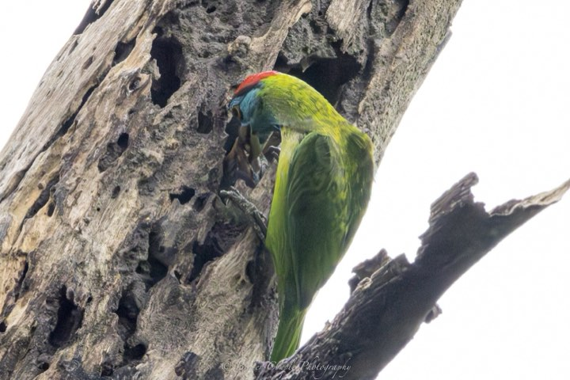
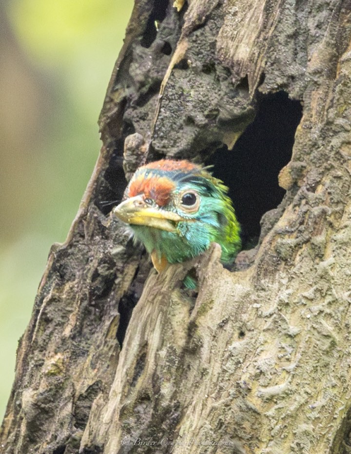
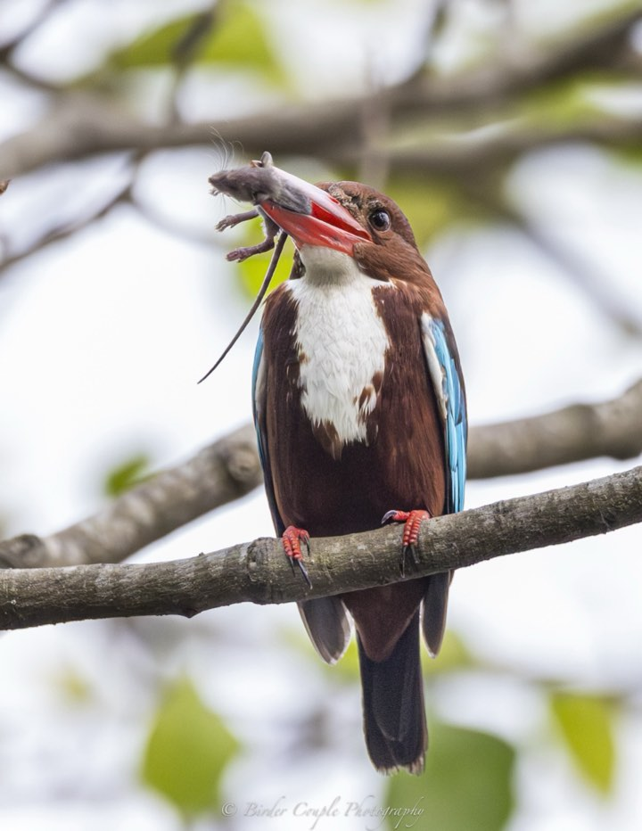

Woodpeckers, Barbets & Kingfishers
Tree-drummers, colourful barbets and sharp-billed fishers. 10 species, 35 photos.
Acorn Woodpecker 3 photos


Black-Rumped Flameback 4 photos


Blue-Throated Barbet 6 photos




Coppersmith Barbet 2 photos

Green Bee-Eater 2 photos

Lineated Barbet 4 photos


Northern Flicker 2 photos

Rufous Woodpecker 1 photo

Stork-Billed Kingfisher 2 photos
White-Throated Kingfisher 9 photos


